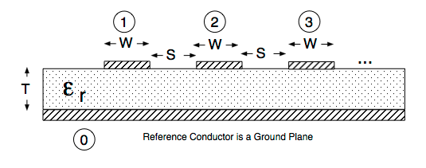
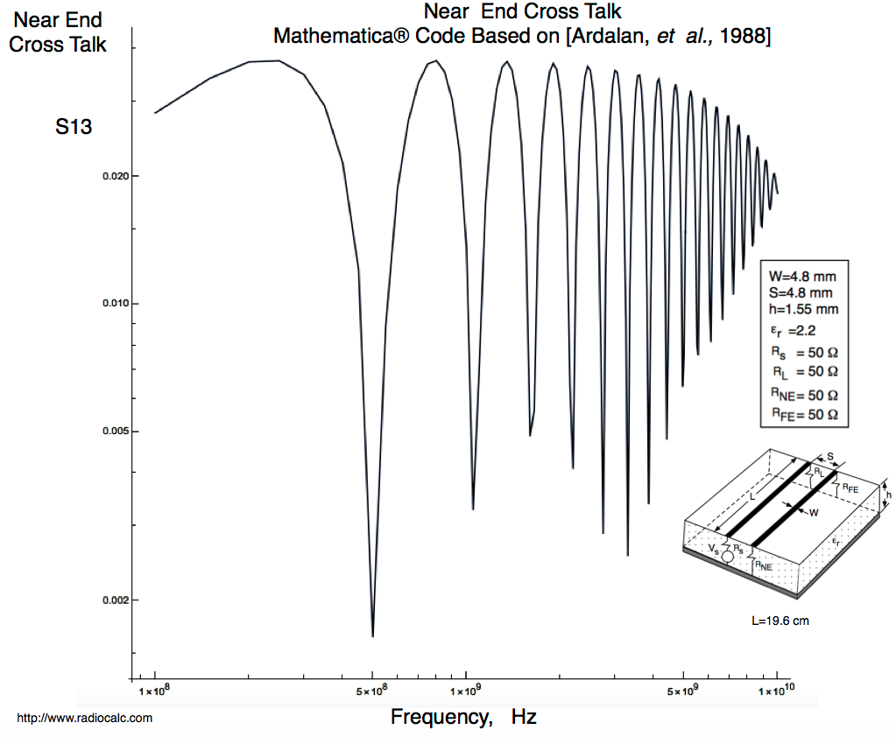
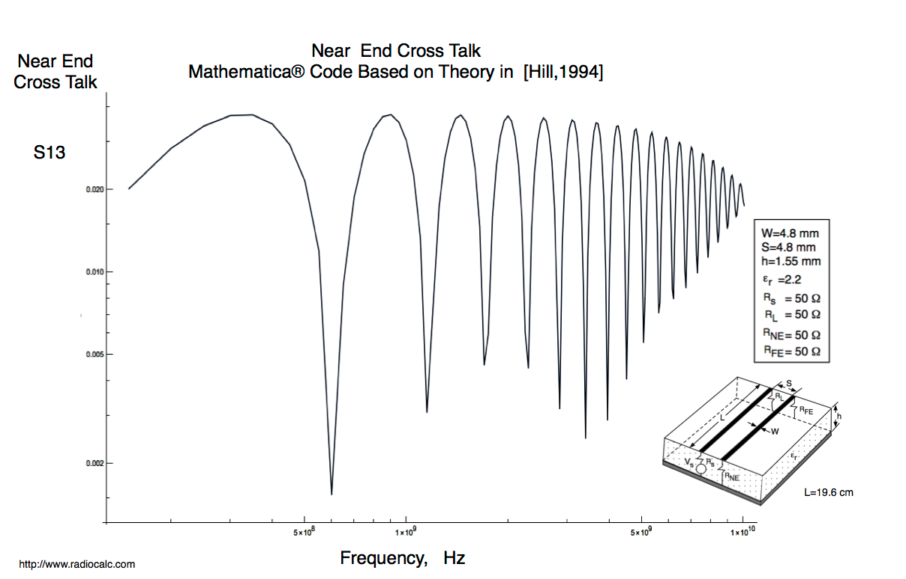
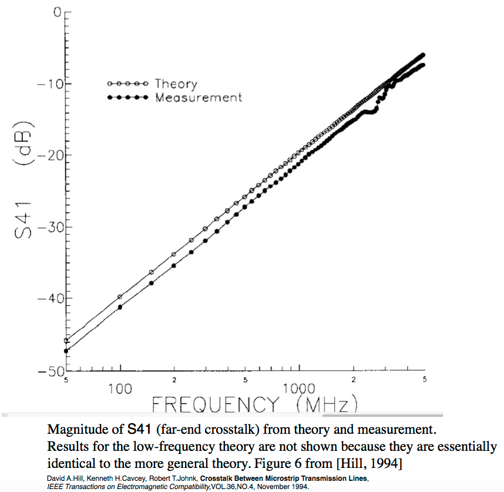

|
|---|
Open Source Mathematica ® Code Multiconductor Modeling and Analysis
Microstrip Circuits
See Notes (Scroll Down).
Case |
Description | Code | WEB View | Result Plots |
|---|---|---|---|---|
1 |
Near End Cross Talk. Mathematica® Code for Multiconductor Microstrip Based on Riddle, Ardalan, Suh Report |
Notebook | HTML | |
2 |
Near End Cross Talk. Mathematica® Code for Multiconductor Microstrip Based on Theory [Hill, 1994] | Notebook | HTML | Near End Cross Talk S13 |
3 |
Far End Cross Talk. Mathematica® Code for Multiconductor Microstrip Based on Riddle, Ardalan, Suh Report |
Far End Cross Talk S14 (Note Rs=0, Vs=1 Volt). | ||
4 |
Far End Cross Talk Measurements from [Hill,1994]. Ardalan et al. |
Far End Cross Talk S14 Measurements from [Hill,1994] |
{kind=link}
{kind=link}
{kind=link}
Tools
Item |
Description | Code | WEB View | Graphic |
|---|---|---|---|---|
1 |
Mathematica® Code for Computing the Per Unit Inductance and Capacitance Matrices for Multiconductor Microstrip Systems. Based on FORTRAN Code by Clayton Paul. See comments. | Notebook | HTML |  |
References:
1- Mike Riddle, Sasan Ardalan, John Suh, Derivation of Voltage and Current Transfer Functions for Multiconductor Transmission Lines,CCSP, NC State University, 1988. Also published in the IEEE International Conference on Circuits and Systems, 1989. For CCSP NC State Report see the  PDF Report.
PDF Report.
2- David A.Hill, Kenneth H.Cavcey, Robert T.Johnk, Crosstalk Between Microstrip Transmission Lines, IEEE Transactions on Electromagnetic Compatibility,VOL.36,NO.4, November 1994.
Case 1

Case 2

Case 3

Case 4

The Mathematica Code is based on Riddle, Ardalan , Suh, 1988  and has no approximations. Although the code provided is for a 2 Conductor Coupled Microstrip circuit it is written for an arbitrary number of conductors. The key is to generate the Per Unit Length Parameters using the Mathematica Tool and pasting them in ( for Matrices LL and Cap). Also set the number of conductors ( NN). Note that you must decide which result you want to examine. Look at the Vx vector which is the calculated voltage at each node at a distance x from the source To calculate S14 ( Far End Crosstalk) you need Vx for x=0 and Vx fo x=L. Two step process. Unless you set the source impedance to zero for the generator.
and has no approximations. Although the code provided is for a 2 Conductor Coupled Microstrip circuit it is written for an arbitrary number of conductors. The key is to generate the Per Unit Length Parameters using the Mathematica Tool and pasting them in ( for Matrices LL and Cap). Also set the number of conductors ( NN). Note that you must decide which result you want to examine. Look at the Vx vector which is the calculated voltage at each node at a distance x from the source To calculate S14 ( Far End Crosstalk) you need Vx for x=0 and Vx fo x=L. Two step process. Unless you set the source impedance to zero for the generator.